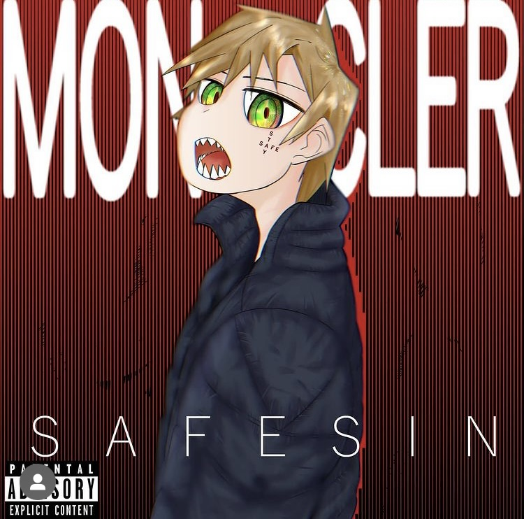

I never expected myself to go into album work, since I didn't really have any influence from other artists. This was the oddball that I've taken once I had made friends with a couple of folks who wanted to pursue making music and requested me of designing their future album or singles.
With this first piece, my first friend gave me the creative freedom of coming up with whatever I felt would have worked with his song. The title of the song was “moncler” so of course the very first thing I did was research the company and their designs. I took into consideration of what was said into lyrics and styled it off that and the references I used in my research.

With my second piece, while I still had most of control on creating the design, there were some limitations on what my client wanted. I drew up multiple drafts first on paper, while asking them what type of person they were and what they were looking for in this design. With some of my designs I was showing, my client became hooked onto the “melting” design and we went with that as the baseline of the design. Afterwords, I finished up the sketch, remade it in digital with a few extra tweaks and then asked what they would like to do with the background. We then settled on a psychedelic theme and I went from there. Most of the design including the font and extra subtle piece were added which the client was very impressed with.
back to homepage